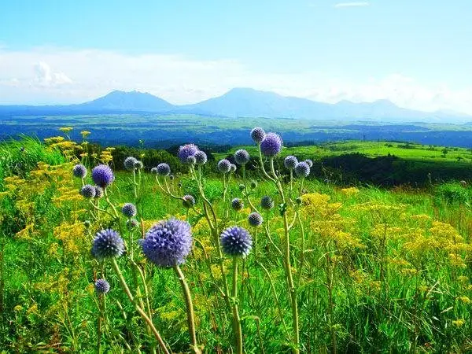
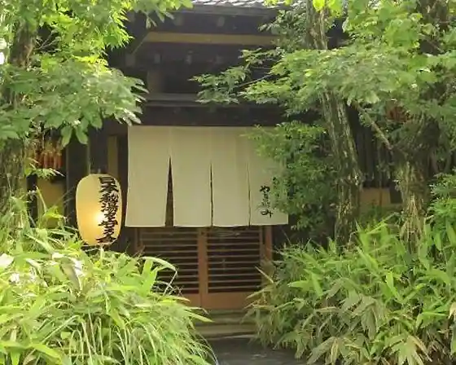
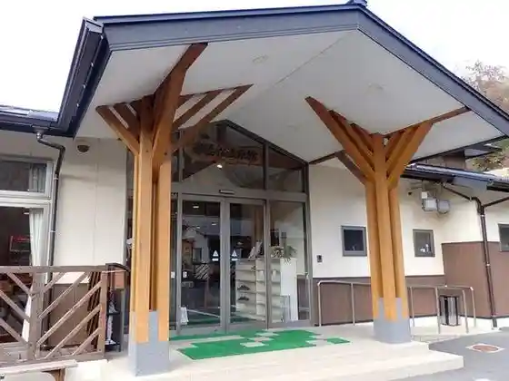
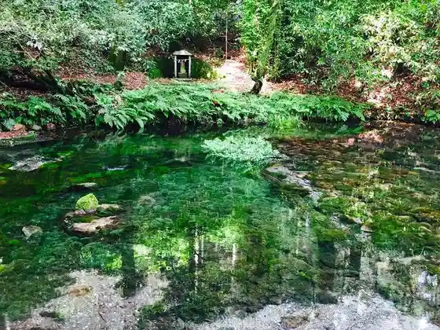

Japan / Kumamoto / Ubuyama
Ubuyama
Ubuyama · Kumamoto
Ubuyama
Highlighted on the Kumamoto map.

Sights
Ubuyama Onsen Oku Aso no Yado Yamanami
Ubuyama, Kumamoto · 0967-25-2414 · Official / source link

O Yubune Onsen Kan
Ubuyama, Kumamoto · 0967-25-2654 · Official / source link

Ikeyama Suigen
Ubuyama, Kumamoto · 0967-25-2211 · Official / source link

UBUYAMA PLACE
Ubuyama, Kumamoto · 0967-25-2029 · Official / source link
Higotai Park
Ubuyama, Kumamoto · 0967-25-2777 · Official / source link
Ubuyama Ishidatami Michi
Ubuyama, Kumamoto · 0967-25-2211 · Official / source link
Farm Birejji Ubuyama
Ubuyama, Kumamoto · 0967-25-2210 · Official / source link
Ogi Tanada
Ubuyama, Kumamoto · 0967-25-2211 · Official / source link
Sanso Shiki Cho
Ubuyama, Kumamoto · 0967-25-3232 · Official / source link
Yaki Amondokafe DABERIBA
Ubuyama, Kumamoto · 0967-25-3650 · Official / source link
Yamabuki Suigen
Ubuyama, Kumamoto · 0967-25-2211 · Official / source link
Noka Resutoran Yama Village
Ubuyama, Kumamoto · 0967-25-2253 · Official / source link
Yakiniku Sei
Ubuyama, Kumamoto · 0967-25-2983 · Official / source link